The Charminar is a monument located in Hyderabad, Telangana, India. Constructed in 1591, the landmark is a symbol of Hyderabad and officially incorporated in the emblem of Telangana. The Charminar's long history includes the existence of a mosque on its top floor for more than 434 years. While both historically and religiously significant, it is also known for its popular and busy local markets surrounding the structure, and has become one of the most frequented tourist attractions in Hyderabad. Charminar is also a site of numerous festival celebrations, such as Eid-ul-adha and Eid al-Fitr, as it is adjacent to the city's main mosque, the Makkah Masjid.
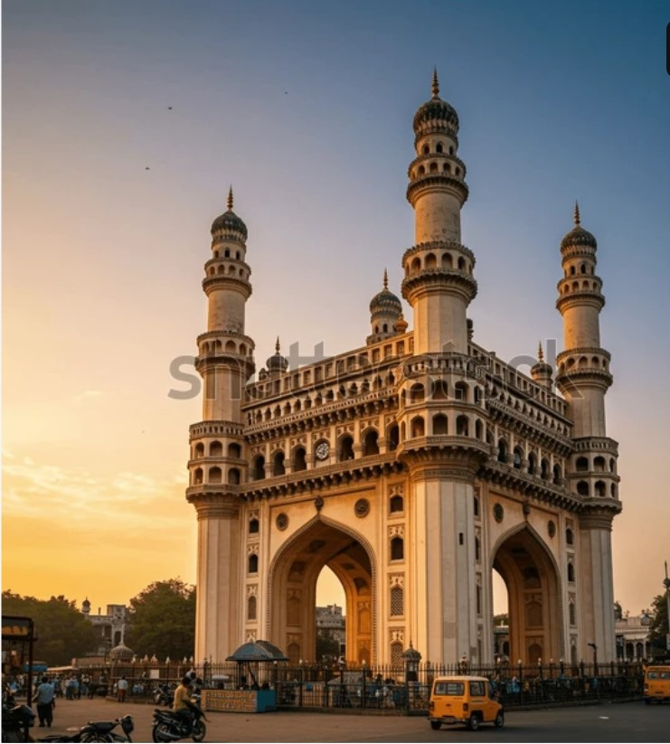
**********************************************************************************************
The fifth ruler of the Qutb Shahi dynasty, Muhammad Quli Qutb Shah, built the Charminar in 1591 after shifting his capital from Golconda to the newly formed city of Hyderabad.
The Archaeological Survey of India (ASI), the current caretaker of the monument, mentions in its records, "There are various theories regarding the purpose for which Charminar was constructed. However, it is widely accepted that Charminar was built at the centre of the city, to commemorate the eradication of plague", a deadly disease which was widespread at that time. According to Jean de Thévenot, a French traveller of the 17th century whose narration was complemented with the available Persian texts, the Charminar was constructed in the year 1591 CE, to commemorate the beginning of the second Islamic millennium year (1000 AH). The event was celebrated far and wide in the Islamic world, thus Qutb Shah founded the city of Hyderabad to celebrate the event and commemorate it with the construction of this building.
The construction began in 1589 and was completed in two years at a cost of Rs. 9 lakhs, which was around 2 lakh huns/gold coins in those times. Upon completion, it was the tallest structure in Hyderabad. It is said to weigh around 14000 tonnes with a minimum of 30 feet deep foundation. In 1670, a minaret had fallen after being struck by lightning. It was then repaired at a cost of around Rs. 58000. In 1820, some part of it was renovated by Sikandar Jah at a cost of Rs. 2 lakh.
The Charminar was constructed at the intersection of the historical trade route that connects the city to international markets through the port city of Machilipatnam. The Old City of Hyderabad was designed with Charminar as its centrepiece. The city was spread around the Charminar in four different quadrants and chambers, segregated according to the established settlements. Towards the north of Charminar is the Char Kaman, or four gateways, constructed in the cardinal direction.Additional eminent architects from Persia were also invited to develop the city plan. The structure itself was intended to serve as a mosque and madrasa. It is of Indo-Islamic architecture style, incorporating Persian architectural elements. A sample of Charminar is said to have been created at Dabirpura/Nagaboli graveyard before the actual construction.
The Charminar is situated on the east bank of Musi River. To the west lies the Laad Bazaar, and to the southwest the richly ornamented Makkah Masjid. It is listed as an archaeological and architectural treasure on the official list of monuments prepared by the Archaeological Survey of India.[7] The English name is a translation and combination of the Urdu words chār and minar, translating to "Four Pillars"; the towers are ornate minarets attached and supported by four grand arches
**********************************************************************************************
The Charminar masjid is a square structure with each side being 20 metres (66 ft) long. Each of the four sides has one of four grand arches, each facing a fundamental point that opens directly onto the street in front of it. At each corner stands an exquisitely shaped 56 metres (184 ft) high minaret, with a double balcony. Each minaret is crowned by a bulbous dome with dainty, petal-like designs at the base. Unlike the minarets of Taj Mahal, Charminar's four fluted minarets are built into the main structure. There are 149 winding steps to reach the upper floor. The structure is also known for its profusion of stucco decorations and the arrangement of balustrades and balconies.
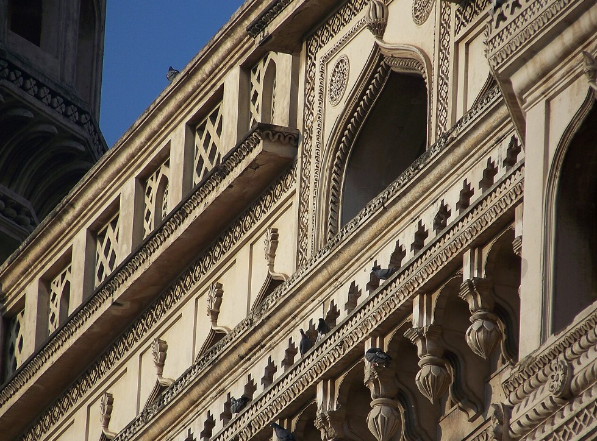
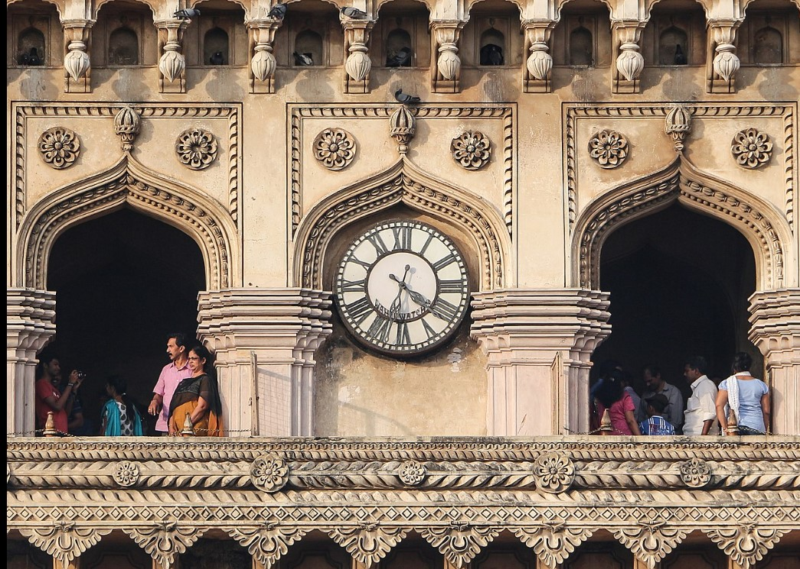
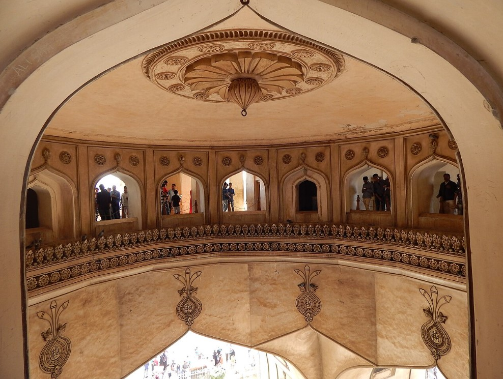
The structure is made of granite, limestone, mortar, and pulverised marble, weighing approximately 14,000 tones apiece.[19] Initially the monument was so proportionately planned that when the fort first opened, one could see all four corners of the bustling city of Hyderabad through each of its four grand arches, as each arch faced one of the most active royal ancestral streets.
A mosque is located at the western end of the open roof. The remaining section of the roof served as a royal court during the Qutb Shahi times. The actual mosque occupies the top floor of the four-storey structure. A vault which appears from inside like a dome supports two galleries within the Charminar, one over another. Above those is a terrace that serves as a roof that is bordered with a stone balcony. The main gallery has 45 covered prayer spaces with a large open space in front to accommodate more people for Friday prayers. The clock on the four cardinal directions was added in 1889. There is a vazu (water cistern) in the middle with a small fountain for ablution before offering prayer in the Charminar mosque.
**********************************************************************************************
| PLACE | PICTURE | CONTENT |
|---|---|---|
| Makkah Masjid | 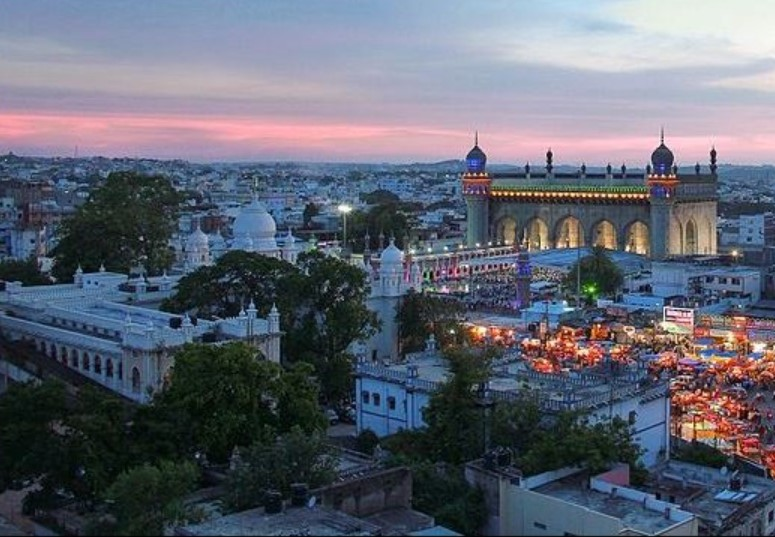 |
The monument overlooks another grand mosque called the Makkah Masjid. Muhammad Quli Qutb Shah, the 5th ruler of the Qutb Shahi dynasty, commissioned bricks to be made from the soil brought from Mecca, the holiest site of Islam, and used them in the construction of the central arch of the mosque, hence its name. |
| Bazaars | 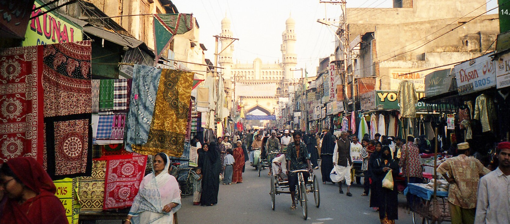 |
A market named Laad Bazaar is around Charminar. It is known for its jewelry, especially bangles. The nearby Pathargatti boulevard is also an important business street known for its pearls. In its heyday, the Charminar market had some 14,000 shops. The Bazaars surrounding Charminar were described in the poem "In the Bazaars of Hyderabad" by Sarojini Naidu. |
| Char Kaman and Gulzar Houz | 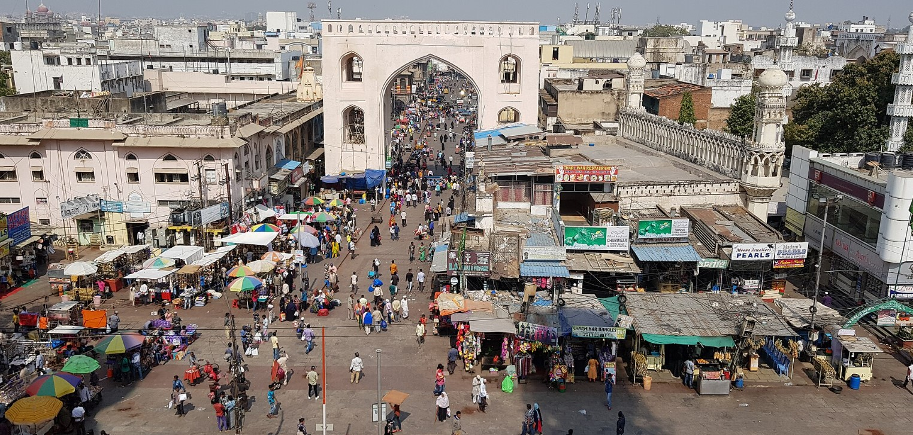 |
Arches in four directions of Charminar are known as Char Kaman. These were built along with the Charminar in the 16th century. These are the Kali Kaman, Machli Kaman, Seher-e-Batil ki Kaman and Charminar Kaman. At the centre of these arches is a fountain called the Gulzar Houz. The Char Kaman are in dire need of restoration, and protection from encroachments. |
**********************************************************************************************
Charminar street shopping in Hyderabad is a vibrant, bustling experience, centered around four key lanes offering traditional pearls, lacquer bangles, bridal wear, and attar (perfumes). Key spots like Laad Bazaar and Pathar Gatti provide affordable, traditional treasures, best experienced with heavy bargaining. The market is open daily, usually from 9:00 AM to 5:30 PM.
**********************************************************************************************
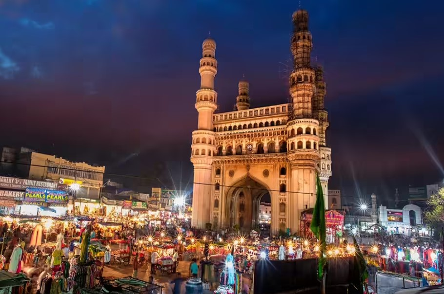
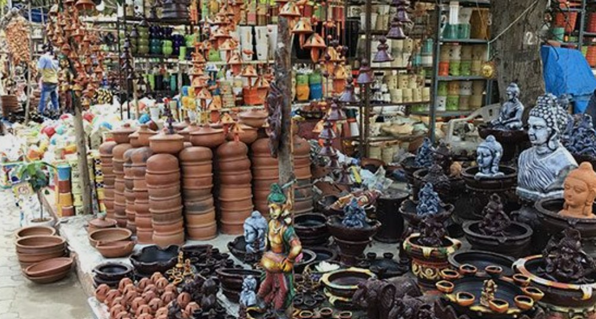
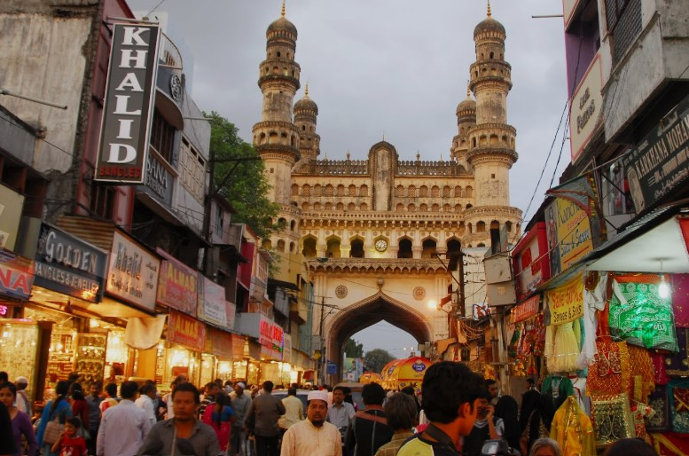
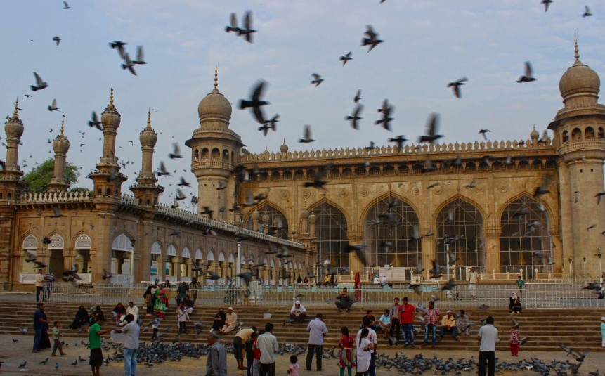
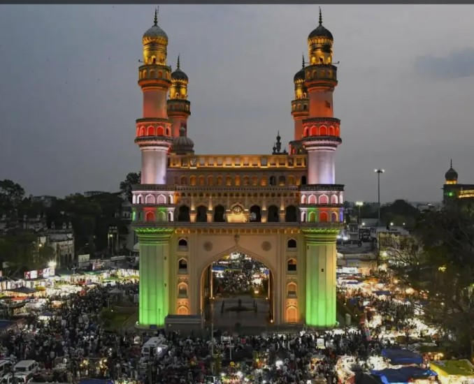